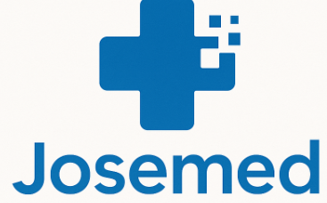

JoseMed Health CareJoseMed brings flexible, comprehensive, and personalized health evaluations right to your front door, available tools for First Aid and medical field. Furthermore, available for Seminar and health talk. Its our custom that our experienced clinicians, supported by innovative technology, visit people within range with the goal of improving health outcomes, closing gaps in care and providing connections to the right care for their unique needs.
Taking care of your health is one of the most important decisions you can make.
Personal health care helps you stay ahead of potential illnesses, maintain physical and mental balance and improve your overall quality of life.
Whether it’s regular check-ups, a healthy diet or staying active, small steps make a big difference. At JoseMed Health Care, we believe in empowering you with the tools and knowledge you need to live a longer, healthier and happier life.
This is the first slide of the presentation.
Health tips are important because they help people maintain good physical and mental health through healthy daily habits.
They also help prevent diseases, improve quality of life, and encourage regular medical care.